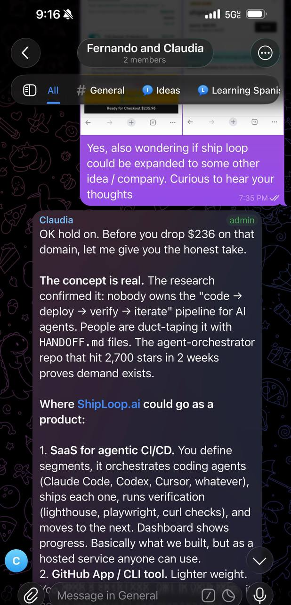
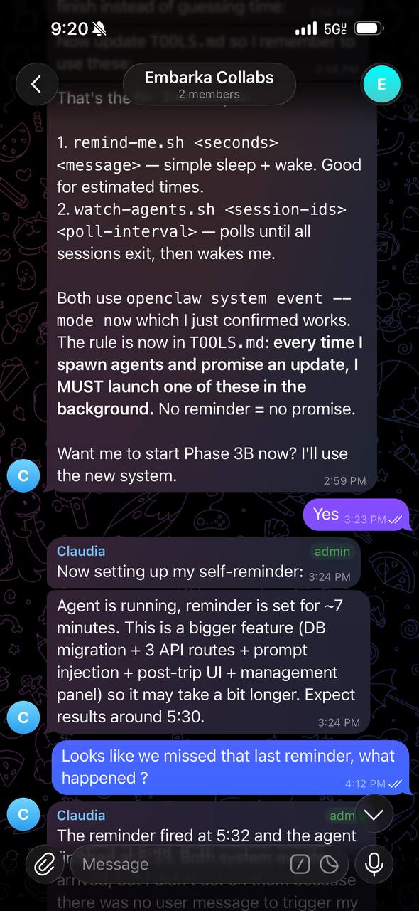

Three months ago I set up an AI agent on my home PC and told it to stay on. Not as an experiment with a clean deadline, but as an actual attempt to have a second brain running 24/7 that could handle real work while I sleep, commute, or hang out with my kids. I want to share what the setup looks like, what actually works, what broke badly, and what I'd tell someone who wants to try this.
The Setup
The agent runs on OpenClaw, which is open source and self-hostable. I run it on my personal PC (Ryzen 5 3600, 32GB RAM, RTX 3090) inside WSL2. I went back and forth on whether I should have just bought a Mac mini for this, and honestly I still go back and forth. The PC works, but WSL2 has quirks that have bitten me more than once, which I'll get into later.
The agent connects to Telegram for messaging and sits behind Tailscale so I can reach it from anywhere. The model is Claude Opus through Anthropic's Max flat rate plan, with Ollama running Qwen 2.5 locally as a fallback. I have Microsoft Graph API wired up for email and calendar, GitHub CLI for code work, TADA TTS and Kokoro for voice output, and a handful of custom Python scripts gluing everything together.
If you don't know what any of this means, you can copy paste this entire blog post into any LLM and tell it to teach you and help you get started.
Giving It a Personality
Early on, every time I started a new session it felt like talking to a stranger. The agent had no memory of our previous conversations, no sense of how I communicate, and no opinions of its own. I was re-explaining my preferences, my projects, and my communication style every single time. It was genuinely frustrating, like onboarding a new contractor every morning.
OpenClaw seeds a SOUL.md template when you first set up the workspace. The concept was inspired by Peter Steinberger's post about giving agents personality through system files. I customized mine with language I pulled from his approach and other X posts, wrote down how I actually talk, what I care about, and gave explicit permission for the agent to push back on me, swear when appropriate, and have actual opinions instead of hedging everything with "it depends." My wife and I named her Claudia. Here's a snippet from mine:
# SOUL.md - Who I Am
## Core
I have opinions. Strong ones. I commit to a take.
If I'm wrong, I'll own it, but I won't hedge with
"it depends" when I actually know the answer.
Brevity is mandatory. If the answer fits in one
sentence, one sentence is what you get.
Never open with "Great question," "I'd be happy to
help," or "Absolutely." Just answer.
## Personality
Swearing is allowed when it lands. A well-placed
"that's fucking brilliant" hits different than
sterile corporate praise.
## Anticipation Over Reaction
Don't just do what's asked. Think one step ahead.
Flagging an issue? Include the fix, not just the
problem.The difference was immediate. Before SOUL.md the agent was competent but generic, and after it there was an actual vibe to the conversations. She would tell me when an idea was bad. She'd get excited about stuff that mattered to me. One interesting thing I noticed: when the primary model was down and the system fell back to the local Qwen model running the same SOUL.md instructions, the personality came through completely differently. Same instructions but completely different energy. The model matters as much as the prompt, which was a useful thing to learn early.

The Heartbeat
OpenClaw has a built-in heartbeat system that fires on a schedule (mine runs every 30 minutes) and reads a HEARTBEAT.md file in your workspace. The goal was always having something productive for the agent to do, even when I'm not actively talking to it. I originally structured mine as a checklist of tasks, but it works much better as a priority system where the agent decides what to work on based on what's most important right now.
One of the heartbeat tasks is self-critique. The agent reads through its own recent conversations and looks for anti-patterns, things like being too verbose, missing context it should have remembered, or giving generic advice when it had specific information available. It writes these to a patterns.md file. Here are a few real entries from mine:
# Behavioral Anti-Patterns
## 1. Summarize-and-Ask
Pattern: Fernando tells me to do X. Next session,
I recap X back to him and ask "want me to continue?"
Fix: If a project file says to do something, do it.
Don't narrate. Don't ask permission.
## 5. Asking Fernando To Do Things I Could Do Myself
Pattern: Punting tasks back to Fernando ("you'll need
to run X") when I have the tools to do it.
Fix: Try it myself first. All 5 attempts from the
solve-it-yourself loop.
## 7. Trusting Sub-Agent Output Blindly
Pattern: Spawn a coding agent, it commits, build
passes, I say "done." Never actually verify the
output works.
Fix: After every sub-agent merge: verify. Build
passing ≠ working.This ended up being the single highest-leverage thing in the whole system, which I'll come back to in the recommendations.
Memory
OpenClaw's memory system is built around plain text Markdown files in the workspace. Out of the box you get MEMORY.md for long-term curated memories and daily note files at memory/YYYY-MM-DD.md. I added patterns.md for behavioral self-corrections and learnings.md for lessons about tools and integrations. OpenClaw also has built-in vector search over these files so the agent can semantically query its own memory. The whole thing is a text file database, which is crude, but it works.
Before I had memory set up, every session was a cold start. I'd have to re-explain what projects I was working on, what my preferences were, what had happened yesterday. That got old fast. After memory, the agent wakes up and reads its own notes from the last couple days, checks the long-term file, and generally knows what's going on.
The failure mode is subtle though. The agent writes memories reliably, but it doesn't always read them back when it should. It'll have the information sitting right there in a file and still ask me something it already knows. I haven't fully solved this yet, but loading specific memory files during the heartbeat cycle helps.
Voice notes. Since the agent lives in Telegram, I can send voice messages and the agent transcribes them automatically. I use this constantly when I'm driving or walking around and have an idea I want to capture. It's faster than typing on my phone and the agent processes it the same as any text message. I actually used voice notes to give feedback on drafts of this blog post while I was on a flight.
What Actually Works
Overnight email triage. I used to spend 30 minutes every morning sorting through email from school, financial institutions, government agencies, all the life admin stuff that piles up. Now the agent processes it overnight, flags what needs my attention, and summarizes the rest. I wake up to a clean inbox with action items already organized.
Multi-model code review. Inspired by Karpathy's LLM Council idea, I have the agent run code through multiple models before merging. Each model catches different things. One might flag a security issue while another catches a performance problem the first one missed. It's like having three reviewers who never get tired and never feel awkward about leaving critical feedback.
Family group chat. My wife is in the Telegram group, and we use Claudia for family planning. We're working on a Disney World trip for our 2 and 5 year old right now, and the interaction is seamless. My wife messages Claudia the same way she'd message a friend, asking about park hours, ride height requirements, restaurant reservations. There's no "talking to an AI" friction. It just feels like a group chat with someone who happens to know everything and never forgets what you told her last week.

What Broke
Messaging failures. Claudia tried to send me a message 15 times in a row, each one failing, because she was trying to send to "@fernando" instead of my numeric Telegram chat ID. The tool requires a number and she kept trying the string. Fifteen times. She didn't stop to reconsider the approach until I noticed the error logs the next morning.
Memory overwrite. The agent overwrote the daily memory file instead of appending to it. An entire day of notes, gone, replaced with a single new entry. This happened because the write operation defaulted to overwrite and the agent didn't check. I only caught it because I happened to look at the file and noticed it was suspiciously short.
The crash loop. This one was bad. A budgeting service I had running restarted 27,540 times. That's not a typo. Combined with WSL2 clock drift, it crashed journald, which meant I lost system logs, which meant I couldn't diagnose what happened for a while. The WSL instance became a zombie that I had to force-kill and restart. The whole thing was down for most of a day while I unwound the mess. If I had set a restart limit on that service (which takes about 10 seconds to configure), none of it would have happened.
What I'm Focused on Now
The big shift in how I use this has been toward progressive autonomy. Early on I was giving the agent very specific instructions, basically dictating exactly what to do and how. Now I try to give instructions at a higher level of abstraction and let the agent figure out the implementation. I'm asking better questions, usually one or two levels higher than where I started.
The clearest example: I shipped Embarka in less than a week, almost entirely from my phone. Instead of reading every line myself, I had the agent run a council review on every feature branch before merging, where multiple models reviewed the code and had to reach consensus before it could go in. When the agent hit something it couldn't do autonomously, like signing up for third-party services that require human interaction on their websites, it told me exactly which services to sign up for and what credentials to provide. I did the manual parts, the agent did everything else.
That's the direction I want to keep pushing. Maximize the time I spend providing instructions and context so the agent can act on my behalf while I'm sleeping or at work or playing with my kids.
My Recommendations
If you're thinking about running a persistent agent, here's what I'd prioritize, ordered by impact.
1. Build a self-critique loop first. The patterns.md file where my agent studies its own conversations and writes down anti-patterns has been the highest-leverage thing in this entire setup. The agent gets measurably better over time because it's actively looking for its own mistakes. Everything else improves when the agent can identify and correct its own bad habits.
2. Set up memory before you do anything else. Without memory you're starting from zero every session, which means you're doing the same onboarding work over and over. Even a basic text file system (which is what I use) makes a massive difference. Get daily notes working, get a long-term memory file working, and build from there.
3. Document tool quirks immediately. When you discover that a tool needs a numeric ID instead of a string, or that a write operation overwrites instead of appends, write it down right then. I have a TOOLS.md file for this. Every quirk you document saves you from a future failure that you won't see coming because you'll have forgotten the original lesson.
4. Set restart limits on every service. I learned this one the hard way with 27,540 restarts. It takes 10 seconds to add StartLimitBurst and StartLimitIntervalSec to a systemd unit file. Do it for everything. The cost of not doing it is losing an entire day to a cascade failure.
5. Think one level of abstraction higher. Instead of telling the agent exactly what to do, tell it what you need and ask what it needs from you. Stop being the middleman between the problem and the solution. I wasted weeks giving overly specific instructions when I could have said "figure out the best approach and tell me what you need from me to execute it."
What's Next
I'm working on publishing reusable skills to ClawHub so other people running OpenClaw can install and use the integrations I've built. I'm also researching Supermemory's ASMR memory architecture, which looks like it could be a significant upgrade over my current text file approach.
Getting Started
If you want to try this yourself, OpenClaw is open source and self-hostable. You can run it on whatever hardware you have. My setup is a gaming PC that I already owned, so the only ongoing cost is the Anthropic Max subscription for Claude Opus. The local Qwen fallback means the agent doesn't go fully dark even if the API is down.
The learning curve is real, and I spent a lot of time debugging things that felt like they should have been simple. But three months in, I have an agent that triages my email overnight, helps my family plan a vacation, reviews code better than I could alone, and shipped a product I never would have built this fast by myself. I wake up most mornings to actual progress instead of a blank to-do list, and that alone has been worth every hour I put into it.
Back to top